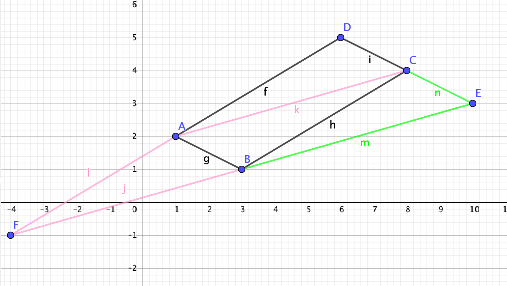

Multivariable Calculus extends differential and integral calculus concepts to functions in two or more variables. The topics include vectors, dot products, cross products, equations of lines and planes, surfaces, vector-valued functions, derivatives and integrals of vector-valued functions, space curves, partial and directional derivatives, extrema, double and triple integrals, etc. The curriculum may include concepts such as vector fields, line integrals, applications from the natural sciences or content from abstract mathematics topics.
notes / updates
November 30, 2023 | About the final exam
Our final exam will be comprehensive and worth 20% of the fall semester grade. The precise exam format is unknown at this time but will likely resemble the quizzes and could possibly include true/false/justify questions that test our conceptual understanding.
The list of topics below is general and not meant to include every single idea we discussed in class:
-the three-dimensional space
-points, distance formula, spheres
-lines and their equations
-planes and their equations
-quadric surfaces
-cylindrical and spherical coordinates
-the dot product
-projections
-the cross product
-vector-valued functions
-calculus of vector-valued functions
-arclength
-arclength parametrization
-TNB, ...
November 9, 2023 | Notes on Recent Quiz
P1
a)
The curve is an ellipse centered at the origin and the equation is:
\( \frac{y^2}{4} + \frac{z^2}{9} = 1 \)
The major (z-direction) and minor (x-direction) axes are 9 and 4, respectively.
b)
\( \vec{r'(t)} = <-2 \sin(t), 3 \cos(t)> , \vec{r''(t)} = <-2 \cos(t), -3 \sin(t)> \)
\( |\vec{r'(t)}| = \sqrt{4 + 5\cos^2 t} \), so the minimum and maximum are 2 and 3. Those occur when cosine is 0 and 1, respectively.
\( |\vec{r''(t)}| = \sqrt{4 + 5\sin^2 t} \), so the minimum and maximum are 2 and 3. Those occur when sine is 0 and 1, respectively.
P2
a) Use integration by parts twice. This was the messiest of the three.
Final answer: \( < \frac{-(\cos(t)+\sin(t))}{2 e^t},\frac{\sin(t)-\cos(t)}{2 e^t}> + \vec{C} \)
b) Final answer: \( < \sqrt{2}-1, \frac{\ln 2}{2}, \frac{1}{2} > \)
c) Final answer: \( < e^{2t} \frac{2t-1}{4}, -t -\ln(1-t), \arcsin t > + \vec{C} \)
November 7, 2023 | Notes on Recent Quiz
P1
In problem 1, find the derivative of the vector-valued function:
\( \vec{r'(t)} = < -2\sin t, 2\cos t, e^t > \)
Read the normal vector to the plane: \( \vec{n} = < \sqrt{3}, 1, 0 > \)
Set the dot product of the two vector expressions above equal to zero, to find:
\( \tan t = \frac{\sqrt{3}}{3} \rightarrow t = \frac{\pi}{6} \)
The wanted point is \( (\sqrt{3}, 1, e^{\pi/6}) \)
P2
To parametrize the intersection, we can simply set \( x=t \) or look for an option that uses trigonometric functions.
with the first option, we get: \( \vec{r(t)} = < t, \sqrt{25-t^2}, \sqrt{t^2-5} > \)
Find the derivative and then evaluate at t=3, to get: \( \vec{r'(3)} = < 1, -3/4, 3/2 > \)
The vector equation of the tangent line is: \( < x, y, z > = < 3+t, 4-3t/4, 2+3t/2 > \)
Alternatively, for a trig parametrization, we start with the second equation and set:
\( y=\sqrt{20} \cos t, z=\sqrt{20}\sin t \), the first component becomes: \( x=\sqrt{25-20\cos^2t} \)
Finding the specific t value isn't necessary with this approach, because with the coordinates (3,4,2), we get: \( \cos t = \frac{2}{\sqrt{5}}, \sin t=\frac{1}{\sqrt{5}} \),
which can be plugged into the derivative's components directly, without using the inverse.
\( x'(t^{*}) = 8/3, y'(t^{*})=-2, x'(t^{*})=4 \)
Note the this direction vector is a multiple of the one we found with the first approach.
October 27, 2023 | Quiz Notes
Below find some quiz notes. Graded work will be returned in class. If there are mistakes or typos below, feel free to email me.
P1
Let point P have coordinates \( (x, y, z) \). Translating the condition about distance into an equation, we get:
\( |y-1| = 2 \sqrt{x^2+(y+1)^2 + z^2} \)
Square both sides, to get:
\( y^2-2y + 1 = 4x^2 + 4z^2 + 4y^2+8y+4 \)
\( 4x^2 + 3y^2 + 10y + 4z^2 = -3 \)
Complete the square for all three variables:
\( 4x^2 + 3(y^2 + 2*5y/3 + 25/9) + 4z^2 = -3 + 3*25/9 = 16/3 \)
\( \frac{x^2}{4/3} + \frac{(y+5/3)^2}{16/9} + \frac{z^2}{4/3} = 1 \)
The points P describe an ellipsoid centered at (0, -5/3, 0).
P2
Surface 1: \( x^2 + 2y^2-z^2 + 3x = 1 \)
Surface 2: \( 2x^2 + 4y^2-2z^2 - 5y = 0 \)
The intersection of the two surfaces consists of points (x, y, z) that satisfy both equations.
Note that if we multiply the first equation by 2 and subtract side by side, we get: \( 6x + 5y = 2 \).
This means that the intersection of the two surfaces, no matter what it looks like, must consist of points that belong to a plane.
September 15, 2023 | Quiz Notes
Below find some quiz notes. Graded work will be returned in class. If there are mistakes or typos below, feel free to email me.
P1
Let the points be: A(1, 2), B(3,1), and C(8,4). Form three vectors:
\( \vec{AB} = < 2, -1 >, \vec{BC} = < 5, 3 >, \vec{AC} = < 7, 2> \)
Find the three possibilities by adding any vector to the point that wasn't used to form that vector. For example, to the vector \( \vec{OC} \) we add the vector \( \vec{AB} \).
The missing points are: (10, 3), (-4, -1), and (6, 5), as shown below:

P2
There were no issues with problem 2.
September 14, 2023 | Quiz Notes
Below find some quiz notes. Graded work will be returned in class. If there are mistakes or typos below, feel free to email me.
P1
Form three vectors using the points: A(4, -2, 7), B(-2,0,3), C(7, -3, 9).
\( \vec{AB} = < -6, 2, -4 >, \vec{AC} = < 3, -1, 2 >, \vec{BC} = < 9, -3, 6 > \)
Note that \( \vec{AB} = -2* \vec{AC} \text{ and } \vec{BC} = (-3/2)* \vec{AB} \)
The three vectors are therefore multiples of each other, so the points are collinear.
Note that the problem asked us to use vectors.
P2
A(2, 9, 1), B(3,11,4), C(0, 10, 12), D(1, 12, 5)
Same idea here, except the four resulting vectors should be two equal pairs:
\( \vec{AB} = < 1, 2, 3 > = \vec{CD} \text{ and } \vec{AC} = < -2, 1, 1 > = \vec{BD} \)
Note that the problem asked us to use vectors.
P3
\( t\vec{v} \) consists of all points on the line in the direction of vector \( \vec{v} \), passing through the origin.
\( \vec{u} + t\vec{v} \) describes all points on the lines that passes through the tip of \( \vec{u} \) in the direction of \( \vec{v} \). Here we assume that vector \( \vec{u} \) starts at the origin.
\( s\vec{u} + t\vec{v} \) describes all points on the plane as long as \( \vec{u}, \vec{v} \) are not parallel to each other. If they are parallel, the resulting set is the line passing through the origin in the direction of either vector.